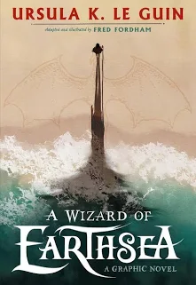
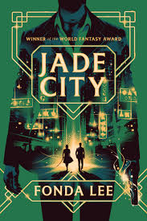
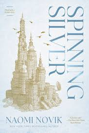
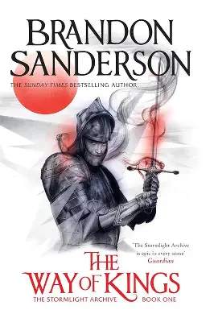

gideon the ninth
Cassidy:
An absolute fever dream of a book. It’s snarky, dark, and utterly unique.
If you ever wanted 'Lesbian Necromancers in Space,' Muir delivers that and so much more.
The ending left me staring at the wall for an hour."

A wizard of Earthsea
Julian Thorne:
Le Guin is a master of the craft. Unlike modern fantasy that relies on complex magic systems,
this is a quiet, philosophical journey about balance and the power of names.
It feels like a foundational myth.

Jade Cit
Elena Rodriguez:
The Godfather meets Shaw Brothers cinema. The Kaul family dynamic is the heart of this story.
It’s a masterclass in urban fantasy and political intrigue. I haven't rooted for characters this hard in years.

Spinning silver
Hannah b.Miller:
Atmospheric and chillingly beautiful.
Novik weaves a tale that feels like a classic fairy tale but with much sharper edges.
The way the three female perspectives intertwine is nothing short of brilliant.

The Way of Kings
Markus v.:
Yes, it’s a massive tome, but every page is worth it. Sanderson’s world-building is unparalleled.
Kaladin’s journey from despair to hope is one of the most powerful character arcs I’ve ever read in epic fantasy.